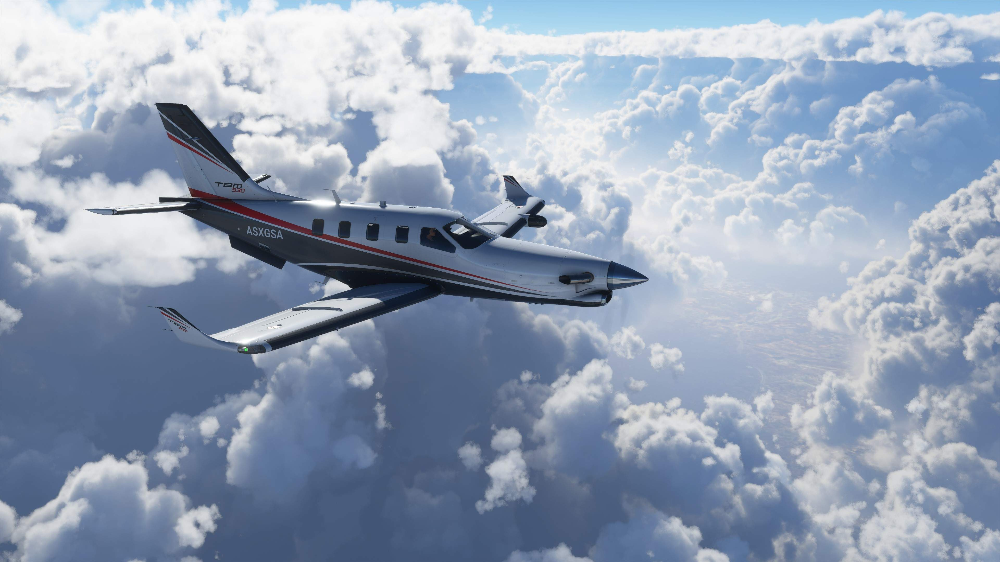

Download Microsoft Flight Simulator Here: MFS Download Here
There are many different types of aircraft one can play in Microsoft Flight Simulator. One can fly an assortment of different aircraft from propellar to gas-turbine engine aircraft. The ability to travel around the world over cities, landmarks, and even your home is breathtaking!